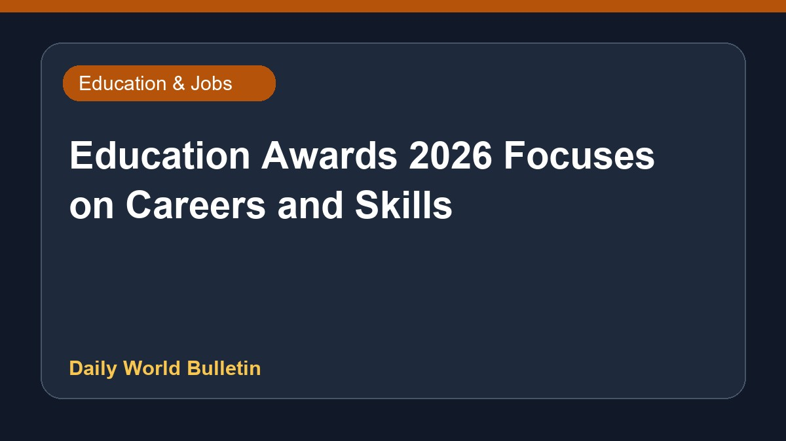

Education Awards 2026 Focuses on Careers and Skills

The Education Awards 2026 event provides valuable insights regarding careers, examinations, educational leadership, and future-ready skills. According to reports from The Hans India, the programme highlights essential developments in the academic and professional sectors. However, further specifics regarding the event's schedule, venue, and participating dignitaries are currently limited. Observers note that such platforms are crucial for guiding students and professionals through evolving industry demands and modern educational landscapes.
Original source: Education News Sources
Education Awards 2026: Insights on careers, exams, leadership, and future skills - The Hans India ↗
Education Awards 2026: Insights on careers, exams, leadership, and future skills - The Hans India ↗